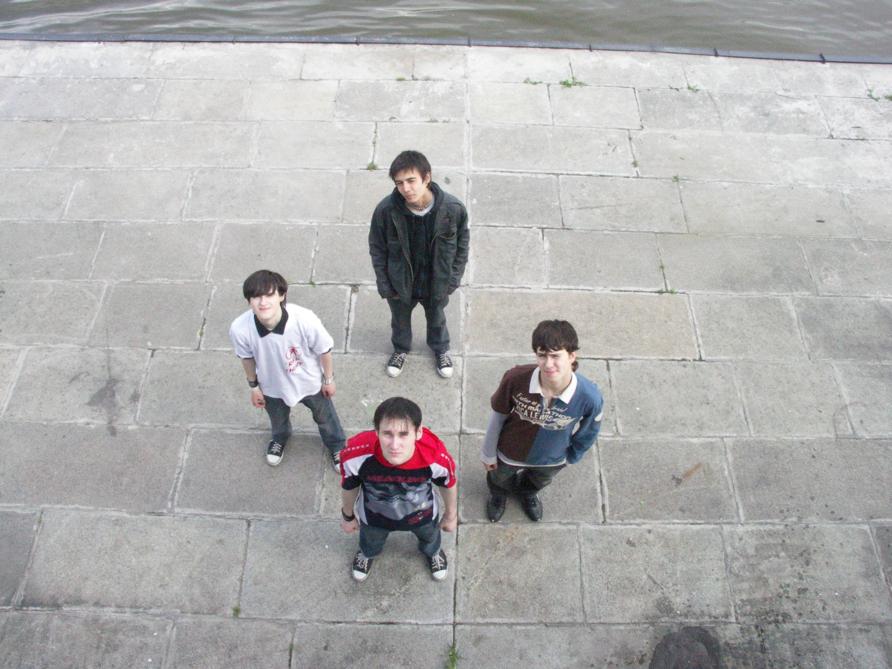

Группа The Red Light была основана в апреле 2007 года. С тех пор мы претерпели множество изменений и перевоплощений. На сегодняшний день, группа играет в жанрах Rock, Alternative, Hardcore, Punk, Rap-core. Ранее мы активно участвовали в различных мероприятиях, сейчас занимаемся в основном только записью. В данный момент времени мы работаем над новыми треками. Следите за новостями. Увидимся! До встречи!!